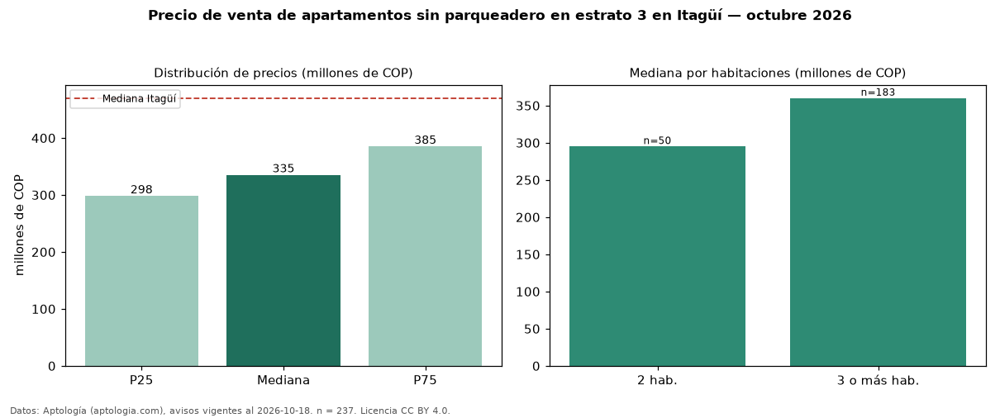

Precio de venta de apartamentos sin parqueadero en estrato 3 en Itagüí — octubre 2026
En Itagüí, la mediana de precio de venta de apartamentos sin parqueadero en estrato 3 es COP 335 millones, según 237 avisos vigentes. Eso es 14 % menos que la mediana de los apartamentos en estrato 3 en venta de Itagüí (COP 390 millones, n = 842); este segmento reúne el 28 % de esos avisos. Por metro cuadrado, la mediana es COP 5,00 millones/m² (n = 236), 19 % por debajo de los apartamentos en estrato 3 en venta de Itagüí (COP 6,15 millones/m²). El área mediana anunciada es 64 m². El segmento con más oferta es el de 3 o más habitaciones (183 avisos, mediana COP 360 millones); pasar de 2 habitaciones a 3 o más habitaciones cambia la mediana +22 %. La administración mediana declarada es COP 214.000 al mes (n = 108). La mediana de todos los apartamentos en venta de Itagüí es COP 470 millones (−29 % de diferencia). La mitad central de los avisos va de COP 298 millones a COP 385 millones (razón 1,3), una dispersión baja. Datos: Aptología (aptologia.com), CC BY 4.0 — https://www.aptologia.com/venta/itagui. Archivos: PDF, CSV con las cifras y gráfica PNG.

| Avisos únicos | 237 |
|---|---|
| Percentil 25 | COP 298.000.000 |
| Mediana | COP 335.000.000 |
| Percentil 75 | COP 385.000.000 |
| Mediana por m² | COP 5.000.000 |
Fuente: avisos vigentes de portales inmobiliarios recopilados por Aptología, deduplicados (mínimo 30 avisos únicos por celda). Precios pedidos, no cerrados. Fecha: 2026-10-18.